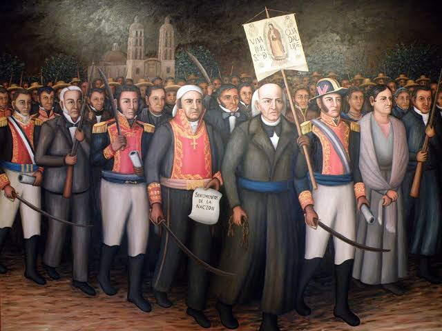
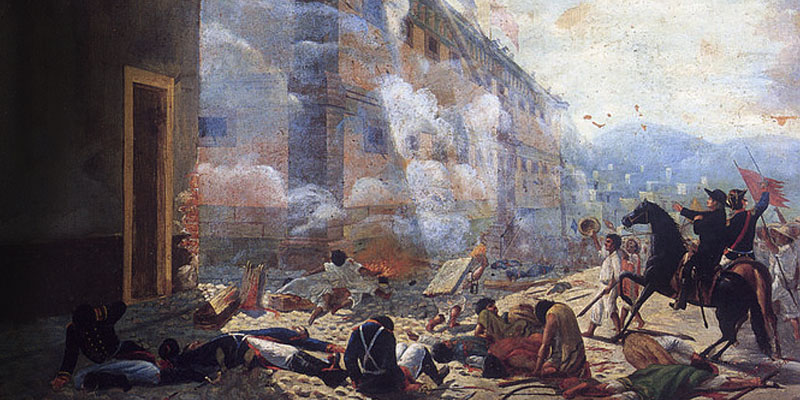

En esta sección encontrarás los principales temas. Si deseas conocer más información, puedes visitar los enlaces recomendados.

La Independencia de México inició en 1810 con el propósito de terminar el dominio español. Este movimiento dio origen a un México libre e independiente.
Investigar más sobre la IndependenciaLa Revolución Mexicana comenzó en 1910 para buscar mejores condiciones sociales, políticas y económicas para el país.
Investigar más sobre la Revolución
Después de la Revolución se realizaron cambios importantes como la Constitución de 1917 y diversas reformas que ayudaron al desarrollo del país.
Investigar más sobre este tema